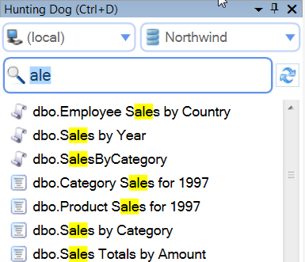
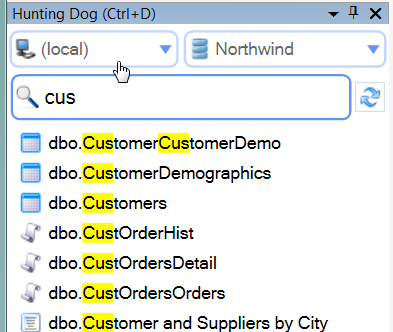
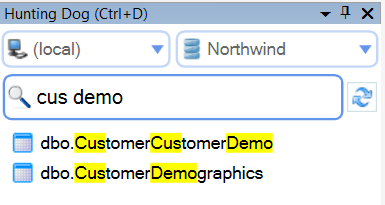
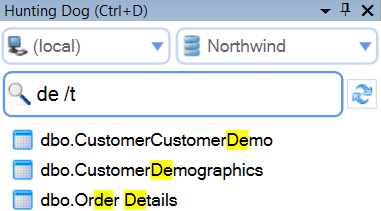
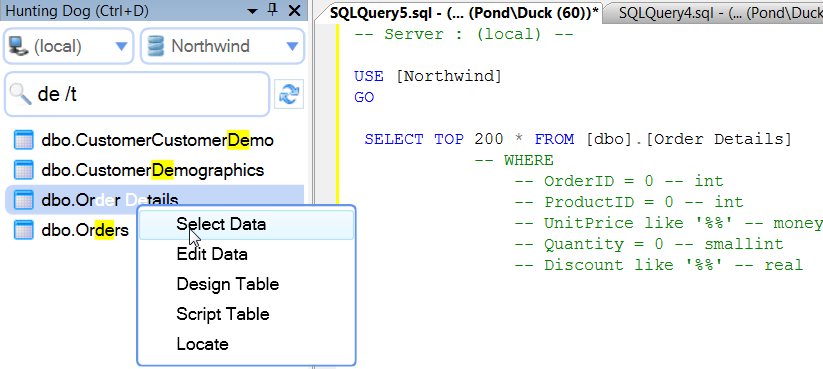
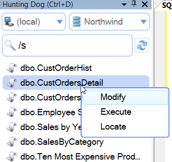
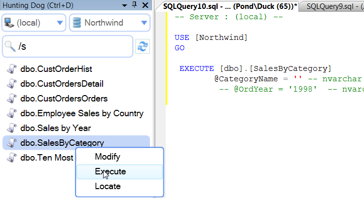
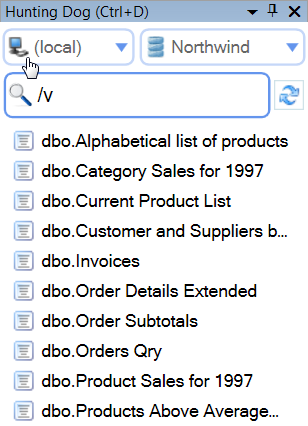
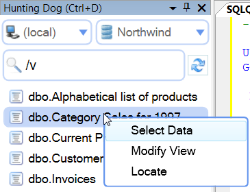

How it works
Hunting Dog works as a plugin for SQL Server Management Studio. That means that it embeds into SQL Server Management Studio 2008 or 2012 and creates a separate window.
This window allows you to quickly search stored procedures, tables, etc. through the connected servers and perform most actions with a single keystroke.
Activate
To activate Hunting Dog SSMS plugin simply press Ctrl+D. SQL Server Management Studio will move the current focus to the plugin's search field.

Table Search
If you want to find a table, simply start typing its name (or any part of its name).

You can narrow down your criteria and specify multiple words.

You can specify /t key to show only tables:

Actions can be performed on Tables
-
Select Data
generate 'SELECT TOP 200 * FROM Table' query in new query window
-
Edit Data
show Edit Data SQL Server Management Studio window
-
Design Data
show SQL Server Management Studio table designer
-
Script table
generate create scripts (script will include indexes)
-
Locate
find Table in the standard Object Explorer

Stored Procedure Search
Just type part of the Stored Procedure name and all matching procedures will be displayed. You can add /s key to filter search only to stored procedures.

Stored Procedure Actions
The following actions are available (Enter or mouse right-click):
-
Modify
show stored procedure body
-
Execute
generate Execute script
-
Locate
find Stored Procedure in the standard Object Explorer

View Search
Just type part of the View name and all matching Views will be displayed. You can add /v key to filter search results to show only Views found.

View Operations
-
Select Data
generate 'SELECT TOP 200 * FROM View' query in new query window
-
Modify View
show View body (ALTER script)
-
Locate
find View in the standard Object Explorer

Function Search
Just type part of the Function name and all matching Views will be displayed. You can add /f key to filter search only to Functions.
Function Actions
-
Modify
show Function body
-
Execute
generate Execute script
-
Locate
find Function in the standard Object Explorer
Drag and Drop
You can drag and drop any table, stored procedure, view or function name from Hunting Dog result window to Query Window.
Connecting and disconnecting SQL Servers
Hunting Dog automatically detects newly connected servers and adds them to the servers combo box. Also, if you disconnect from a server, Hunting Dog removes it. Please allow some time for Hunting Dog to detect a recently connected server (about 3 seconds).
User Preferences
Hunting Dog stores the last database name user worked with for each SQL Server. When the user connects to that SQL Server, Hunting Dog will automatically select Database and restore the last Search text.